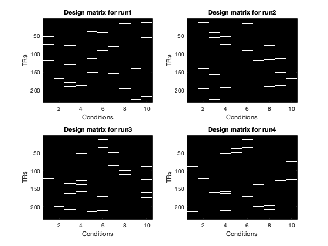

Contents
Add dependencies and download the data.
% Add path to GLMsingle addpath('./../') addpath(genpath('./../utilities')) % You also need fracridge repository to run this code % https://github.com/nrdg/fracridge.git clear clc close all outputdir = 'example2outputs'; % Download files to data directory if ~exist('./data','dir') mkdir('data') end if ~exist('./data/nsdflocexampledataset.mat','file') % download data with curl system('curl -L --output ./data/nsdflocexampledataset.mat https://osf.io/g42tm/download') end load('./data/nsdflocexampledataset.mat') % Data comes from subject1, fLoc session from NSD dataset. % https://www.biorxiv.org/content/10.1101/2021.02.22.432340v1.full.pdf
clc whos % data -> consists of several runs of 4D volume files (x,y,z,t) where % (t)ime is the 4th dimention. % ROI -> manually defined region in the occipital cortex. It is a binary % matrix where (x,y,z) = 1 corresponds to the cortical area that responded % to visual stimuli used in the NSD project. fprintf('There are %d runs in total.\n',length(design)); fprintf('The dimensions of the data for the first run are %s.\n',mat2str(size(data{1}))); fprintf('The stimulus duration is %.6f seconds.\n',stimdur); fprintf('The sampling rate (TR) is %.6f seconds.\n',tr);
Name Size Bytes Class Attributes data 1x4 662329024 cell design 1x4 4640 cell floc 1x1 1415408 struct outputdir 1x15 30 char stimdur 1x1 8 double tr 1x1 8 double visual 1x1 1415408 struct There are 4 runs in total. The dimensions of the data for the first run are [52 81 42 234]. The stimulus duration is 4.000000 seconds. The sampling rate (TR) is 1.333333 seconds.
figure(1);clf %Show example design matrix. for d = 1:length(design) subplot(2,2,d) imagesc(design{d}); colormap gray; drawnow xlabel('Conditions') ylabel('TRs') title(sprintf('Design matrix for run%i',d)) % axis image end
design -> Each run has a corresponding design matrix where each column describes a single condition (conditions are repeated across runs). Each design matrix is binary with 1 specfing the time (TR) when the stimulus is presented on the screen.
% In this NSD fLOC session there were 10 distinct images shown and hence % there are 10 predictor columns/conditions. Notice that white rectangles % are pseudo randomized and they indicate when the presentaion of each % image occurs. Stimulus details are described here % https://github.com/VPNL/fLoc
figure(2);clf
imagesc(makeimagestack(data{1}(:,:,:,1)));
colormap(gray);
axis equal tight;
colorbar;
title('fMRI data (first volume)');

Call GLMestimatesingletrial with default parameters.
opt = struct('wantmemoryoutputs',[1 1 1 1]); if ~exist([outputdir '/GLMsingle'],'dir') [results] = GLMestimatesingletrial(design,data,stimdur,tr,[outputdir '/GLMsingle'],opt); models.FIT_HRF = results{2}; models.FIT_HRF_GLMdenoise = results{3}; models.FIT_HRF_GLMdenoise_RR = results{4}; else results = load([outputdir '/GLMsingle/TYPEB_FITHRF.mat']); models.FIT_HRF = results; results = load([outputdir '/GLMsingle/TYPEC_FITHRF_GLMDENOISE.mat']); models.FIT_HRF_GLMdenoise = results; results = load([outputdir '/GLMsingle/TYPED_FITHRF_GLMDENOISE_RR.mat']); models.FIT_HRF_GLMdenoise_RR = results; end
Plot a slice of brain with GLMsingle outputs.
slice_v1 = 20;
val2plot = {'meanvol';'R2';'HRFindex';'FRACvalue'};
cmaps = {gray;hot;parula;copper};
figure(3);clf
for v = 1 : length(val2plot)
f=subplot(2,2,v);
imagesc(models.FIT_HRF_GLMdenoise_RR.(val2plot{v})(:,:,slice_v1)); axis off image;
colormap(f,cmaps{v})
colorbar
title(val2plot{v})
set(gca,'FontSize',20)
end
set(gcf,'Position',[1224 840 758 408])

Run a standard GLM.
opt.wantlibrary = 0; % switch off HRF fitting opt.wantglmdenoise = 0; % switch off GLMdenoise opt.wantfracridge = 0; % switch off ridge regression opt.wantfileoutputs = [0 1 0 0]; opt.wantmemoryoutputs = [0 1 0 0]; if ~exist([outputdir '/GLMbaseline'],'dir') [ASSUME_HRF] = GLMestimatesingletrial(design,data,stimdur,tr,[outputdir '/GLMbaseline'],opt); models.ASSUME_HRF = ASSUME_HRF{2}; else results = load([outputdir '/GLMbaseline/TYPEB_FITHRF.mat']); models.ASSUME_HRF = results; end
% Now, "models" variable holds solutions for 4 GLM models
disp(fieldnames(models))
'FIT_HRF'
'FIT_HRF_GLMdenoise'
'FIT_HRF_GLMdenoise_RR'
'ASSUME_HRF'
designALL = cat(1,design{:});
% compute a vector containing 1-indexed condition numbers in chronological
% order.
corder = [];
for p=1:size(designALL,1)
if any(designALL(p,:))
corder = [corder find(designALL(p,:))];
end
end
model_names = fieldnames(models); model_names = model_names([4 1 2 3]); % We arrange models from least to most sophisticated (for visualization % purposes)
% In order to compute split-half reliability, we have to do some indexing. % We want to find all repetitions of the same image. For example we can % look up when during the 4 blocks image 1 was repeated. Each image should % be repeated exactly 24 times. find(corder==1) fprintf('Image 1 was repeated %i times.\n',length(find(corder==1)));
ans =
Columns 1 through 13
8 13 17 20 34 57 64 76 85 97 106 114 126
Columns 14 through 24
137 142 151 171 174 195 202 204 214 227 237
Image 1 was repeated 24 times.
% To calculate the split-half reliability we are going to average the odd % and even beta weights extracted from the same condition and calculate the % correlation coefficent between these values. We do this for each voxel vox_reliabilities = cell(1,length(models)); for m = 1 : length(model_names) modelmd = models.(model_names{m}).modelmd; dims = size(modelmd); Xdim = dims(1); Ydim = dims(2); Zdim = dims(3); cond = size(design{1},2); reps = dims(4)/cond; betas = nan(Xdim,Ydim,Zdim,reps,cond); for c = 1 : length(unique(corder)) indx = find(corder == c); betas(:,:,:,:,c) = modelmd(:,:,:,indx); end vox_reliability = NaN(Xdim, Ydim, Zdim); for i = 1:Xdim for j = 1:Ydim for k = 1:Zdim % Calcualte the reliability only for voxels within the % visual and fLOC ROI to save time if visual.ROI(i,j,k) > 0 || floc.ROI(i,j,k) > 0 vox_data = squeeze(betas(i,j,k,:,:)); even_data = nanmean(vox_data(1:2:end,:)); odd_data = nanmean(vox_data(2:2:end,:)); vox_reliability(i,j,k) = corr(even_data', odd_data'); end end end end % store reliablity for each model vox_reliabilities{m} = vox_reliability; end
Compare visual voxel reliabilities between beta versions with V1 and FFA ROIs.
figure(5);clf set(gcf,'Position',[491 709 898 297]) % Show V1 and FFA ROIs slice_v1 = 10; slice_ffa = 3; for s = 1 : 5 subplot(2,5,s) underlay = data{1}(:,:,slice_v1,1); overlay = visual.ROI(:,:,slice_v1)==1; underlay_im = cmaplookup(underlay,min(underlay(:)),max(underlay(:)),[],gray(256)); overlay_im = cmaplookup(overlay,-0.5,0.5,[],[0 0 1]); mask = visual.ROI(:,:,slice_v1)==1; hold on imagesc(imrotate(underlay_im,180)); imagesc(imrotate(overlay_im,180), 'AlphaData', imrotate(mask,180)); title(sprintf('V1 voxels, slice = %i',slice_v1)) slice_v1 = slice_v1 + 1; axis image axis off subplot(2,5,s+5) underlay = data{1}(:,:,slice_ffa,1); overlay = floc.ROI(:,:,slice_ffa)==2; underlay_im = cmaplookup(underlay,min(underlay(:)),max(underlay(:)),[],gray(256)); overlay_im = cmaplookup(overlay,-0.5,0.5,[],round([237 102 31]/255,2)); mask = floc.ROI(:,:,slice_ffa)==2; hold on imagesc(imrotate(underlay_im,180)); imagesc(imrotate(overlay_im,180), 'AlphaData', imrotate(mask,180)); title(sprintf('FFA voxels, slice = %i',slice_ffa)) slice_ffa = slice_ffa + 1; axis image axis off end

figure(6)
cmap = [0.2314 0.6039 0.6980
0.8615 0.7890 0.2457
0.8824 0.6863 0
0.9490 0.1020 0];
% For each GLM type we calculate median reliability for voxels within the
% V1 and FFA and plot it as a bar plot.
mydata = zeros(length(vox_reliabilities),2);
for m = 1 : 4
vox_reliability = vox_reliabilities{m};
mydata(m,:) = [nanmedian(vox_reliability(floc.ROI==2)) nanmedian(vox_reliability(visual.ROI==1))];
end
bar(mydata)
ylabel('Median reliability')
set(gca,'Fontsize',12)
set(gca,'TickLabelInterpreter','none')
xtickangle(0)
legend({'FFA';'V1'},'Interpreter','None','Location','NorthWest')
set(gcf,'Position',[418 412 782 605])
title('Median voxel split-half reliability of GLM models')
xticklabels(model_names')
% Here we should come up with explanation why FFA > V1

% We now plot the improvement of reliability when comparing FITHRF_GLMDENOISE_RR % with ASSUME_HRF, higher positive values mean higher reliability figure(7) set(gcf,'Position',[616 227 863 790]) vox_improvement = vox_reliabilities{4} - vox_reliabilities{1}; slice = 3; ROI = visual.ROI == 1 | floc.ROI == 2; for s = 1:15 subplot(5,3,s) underlay = data{1}(:,:,slice,1); overlay = vox_improvement(:,:,slice); underlay_im = cmaplookup(underlay,min(underlay(:)),max(underlay(:)),[],gray(256)); overlay_im = cmaplookup(overlay,-0.3,0.3,[],cmapsign2); mask = ROI(:,:,slice)==1; hold on imagesc(imrotate(underlay_im,180)); imagesc(imrotate(overlay_im,180), 'AlphaData', imrotate(mask,180)); title(sprintf('slide idx %i',slice)) slice = slice + 1; axis image colormap(cmapsign2) c = colorbar; c.TickLabels = {'-0.3';'0';'0.3'}; xticks([]) yticks([]) end sgtitle('change in V1 and FFA voxel reliability due to GLMsingle (r)','Interpreter','none')